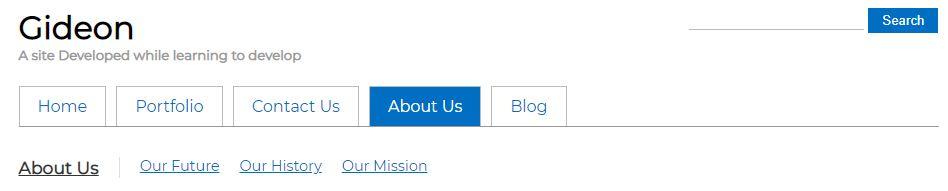
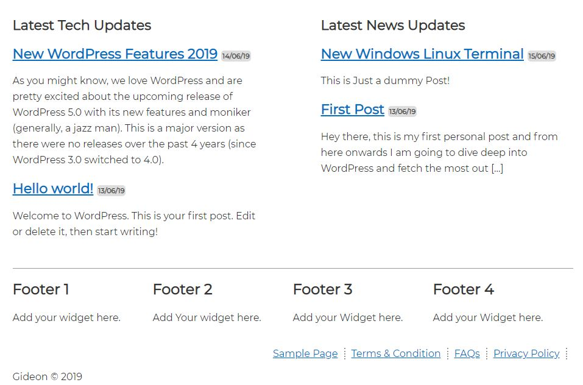
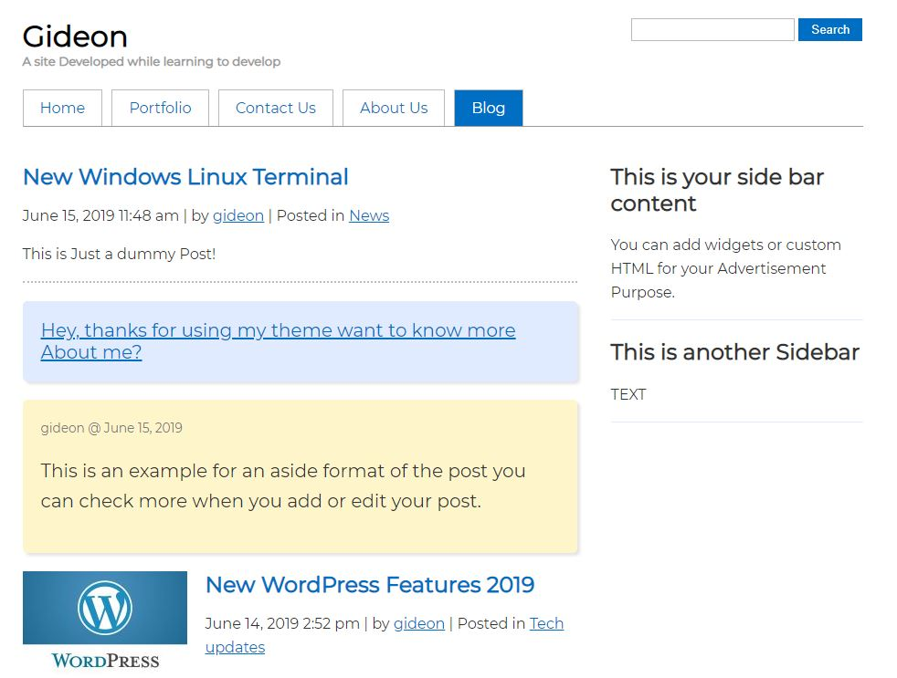

Theme Description
Gideon brings your site to life with immersive featured images. With a focus on blog sites, it features multiple sections on the front page as well as widgets, navigation and social menus, a logo, and more. Personalize its asymmetrical grid with a custom color scheme and showcase your multimedia content with post formats.This theme is developed for the one's who wish to have a good dynamic web blog but don't know how to achieve it, this webpage has a sleek navigation and if you have child pages associated with it you will get a good navigation bar for example check the image below
Home Page
Lets start with the home page first, the features of our home screen is that you can decide what content audience will see and the second part of the home page shows the most recent posts that will be automatically fetched and will be displayed.
Blog Post page
Here is where your audience can see your blogs that you have posted. This page is divided into 2 parts first part is the content and the second part is left four you to be filled for widgets, you can explore the wide range of widgets in the wordpress's widget section. Planning to earn some money you can even display Advertisements and fill your pockets!
Other Pages
This include pages namely: Portfolio, About Us, Contact page.
About Us:
This is a page where your audience can find about who you are!
Portflio:
This is a section which attracts people who wants to know about your work!
Contact Us:
this is the page where people will post there Query or suggestions they want to give you!
Follow the instructions:
1) Download the Zip file from the button below.
Download Theme2) Login to your Wordpress admin panel
3) Go to Appearance
4) Go to Themes
5) Click On Add New
6) Click on Upload Theme
7) Choose a File
8) Select the Zip file that we downloaded in step 1 and click install now, you will see something like this
9) You are already to go have a nice day!